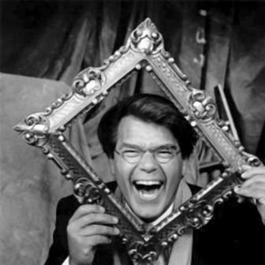

– Alo, Şenay Teyzeciğim, ya 8 tane çıktı zarftan, 9 olmayacak mıydı? Allah Allah, yok 9 değil, biri eksik. Neyse 8 tane yedim artık bir taneden bir şey olmaz herhâlde. Olur mu? Neyse iyi de çalıştım. Bugün, yarın sonuç gelir. Nisan geliyor ben kapatayım, görüşürüz ellerinizden öperim.
– Naaber baba.
– İyilik kızım.
– Babacığım, seminer müthişti cidden. Ali Kuyumcu Ağabey biraz daha iyi konuşuyor; ama sen de süperdin. Çocuk Yuvası’ndaki çocuklar da çok beğendiler.
– Kızım, altı tane çocuğa konuştuk işte.
– Baba olsun! Annemin hiç sana o kadar hayran baktığını görmemiştim.
– Hadi ya, gaz vermiyorsun değil mi?
– Baba, hele o Zagor çizimlerindeki eski Ferre çizimleriyle yeni çizimleri karşılaştırdın ya, çok beğendim.
– Yararlı oldu mu bilmem; ama Ali’yle devam edeceğiz bu işe. Tarkan, Karaoğlan tüm çizimleri, kitapları var. Belki okumayı sevdiririz bir çocuğa.
– Baba, çocuklar niye çimdirdiler ki seni?
– Kızım ben de anlamadım sonra müdüre sordum; ana yok, baba yok, sarılacak büyük görünce hep dokunmak istiyorlarmış.
– Oraya daha sık gitmeliyiz baba.
– Doğru kızım.
– Kitap okumayı bıraktın mı?
– Okuyorum da bu kitapları değil! Bir süre sonra baktım garip işler yapıyorum. Rollere girmeye başladım. Bak Nisan, 20 yıl önce bir gün üniversiteden dönüyorum otobüsle, önümde üç kız. İkisi hiç susmadı, sanat, tiyatro, arkeoloji... Ne kadar püsür varsa konuştular. Üçüncü kız ilginçtir hiç konuşmuyor, dinliyor. Çok ilgimi çekti. O, yarım saat mevzuya girmedi. İkisi bıdır bıdır. Beytepe’den merkez yarım saat sürdü. Sıhhiye’de üçü inecekler. İlk ikisi artık opera konusuna girmişler, sanatın zirvesini konuşurlarken, bizimki devreye girdi ve şöyle dedi: “Gulağım gaşinüyör!”
– Pıh pıh pıhh.
– Ben de bastım kahkahayı. Onun niye muhabbete girmediğini anladım. Atlar nallanırken kurbağalar ayağını uzatmazmış. Bana hitap etmiyor bu yazılanlar, ayağımı uzatmamamda fayda var.
– İyi kitaplar da var baba. Ben sana iyi bir liste çıkarıp vereyim.
– Üzerinde düşününce, yazdıkları kitaplar yer haritası gibi. Harita güzel yeşil falan; fakat gösterdiği yer haritada görüldüğü gibi değil. Kâğıtta taşlar, yılanlar, akrepler, sular tam anlamıyla gerçekler görünmüyor. Hani bir politikacı haritanın üzerinde Napolyon’a parmağıyla göstermiş “Sizin yerinizde olsam burayı da alırdım.” Napolyon da “Öyle parmakla alınıyor olsa, ben de alırdım” demiş.
– Pıh pıh pıhh.
– Olmadığın gibi olmak zordur. Eğreti durur adamın üzerinde.
– Baba, arkadaşım Lâl’in annesi, Banu Teyze, tiyatrocu. Bunlar Anadolu’ya bir oyuna gidiyorlar. Valinin eşi pek sanat seviyor, fazla da kibar, hatta aşırı kibar. Bunlar “Ya kadın bu kadar da rafine olamaz” diyorlar; ama hiç ipucu yakalayamıyorlar. Kadın abartılı tavırlarla bunları yemeğe çağırıyor. Orada nasıl ıstakozlar yediğini, hangi şarapları sevdiğini anlatıyor, çok iyi bir şiveyle konuşuyor. Fakat bu arada feci yiyor, kebapları hapur hupur götürüyor. Bir ara tıkanıyor, dayanamıyor ve böğürüyor, “Ayy guscen şinci.”
– Pıh pıh pıhh.
– Banu Teyzeler kriz geçirmiş, o ana kadar kadın kasmış kendini. Sosyete rolleri, son anda dağılmış.
– Nisan, benim bir arkadaşım vardı askerî lisede, Muhsin. Muhsin, zayıf, cılız bir çocuktu; bizden aşağı kalmamaya çalışırdı, kamplarda koşularda kendini çok zorlardı. Bir şekilde bitirirdi. Bir gün pentatlonda ayrı istasyonlarda çalışıyorduk. İrlanda masasına çıkmaya çalışırken Muhsin öldü, 14-15 yaşında. Muhsin hiç subay olacak bir çocuk değildi. Müthiş bir bilim adamı olabilirdi oysa. Hep bu kitaplarda “Sınırları zorla” falan diyorlar ya, fasarya.
Bir de bana verdiğin kitaplarda “Eğer biri yapabiliyorsa sen de yapabilirsin” gazı var ya... Askerî lise ikinci sınıftayım; 100 metrede Haldun üsteğmen not veriyor, ben o gazla bir koştum: 12.8. Beni çağırdı, “Çalışmalara gel” dedi. Ben artık rüyalarımda dünya şampiyonu oluyorum, tribünler yıkılıyor. Carl Lewis arkamda telef oluyor falan. Paso antrenman yapıyorum. O sırada Akdeniz Olimpiyatları var, 100 metre yarışını seyredeyim dedim. Benim potansiyel rakipler orada hep. İtalyan Mennea falan. Yarış başladı, tam ortalarda Yunanlı atletin bacağında bir sakatlık oldu, adam yavaşladı, yarışı yürür gibi bitirdi. Dereceleri yazdılar. Sonuncu gelen bu neredeyse yürüyen adamın derecesi 12.8. Ben o gün antrenman ve rüyaları bıraktım. O gün anladım ki “Birisi yaparsa sen de yapabilirsin” işi gaz. Yetenek, kapasite, beyin, fizik hep ayrı olanaklar sağlar insana.
Nisan: Anne o ne ?
– Bu senin. Genel Müdür Yardımcın yollamış.
– ?
Hıdır sarı zarfı heyecanla açarken, sağ kolunda dirseğine kadar bir ıslaklık hissetti. Psikolojik diye düşündü. Mektup şöyleydi:
Değerli evladım,
O günkü ziyaretin için teşekkür ettim. Çok mütehassıs oldum. Çünkü partimizin iktidara gelmesiyle geldiğim bu makamda çok ziyaretçim oldu. Hiçbirinde senin ziyaretin kadar duygulanmadım. Anlattıklarından dolayı değil. Ben onları anlamam, dikey hıyararşi falan dediğinde o hıyararşiyi sonra sordurttum, tahmin ettiğim şey değilmiş. Dikey deyince ve sebzeyi duyunca biraz işkillendim; ama neyse ki değilmiş.
Beni duygulandıran şu oldu: Bunca ziyaretçim oldu, hepsi geleneğini göreneğini kaybetmiş. Sen örfümüze uygun bir şekilde büyüğünün yanına girerken ayakkabılarını çıkardın. O gün üç müstahdem seni dışarı yatay hıyararşi şeklinde taşırken, benim gözlerim doldu. Memleketin havasını bana hatırlattın. O camilerdeki hafif çorap kokusunu, kullandığın gül suyunun kokusunu odama taşıdın. Ziyaretin bana ders oldu. Oda girişine altı çift terlik aldırdım, bakanlıkta herkes riayet ediyor. Araştırttım, şef olmak istiyormuşsun, “Yapayım” dedim; ama ne bizim hemşerimizmişsin ne de partiye kaydın var. O kadar hemşerim beklerken, yapmam mümkün değil. Fakat öyle birim değişikliği, izin gibi ne derdin olursa, burada manevi bir baban var bil.
Gözlerinden öperim.
Manevi Baban
Genel Müdür Yardımcısı
K. Cemal Duran
Hıdır gülmekten gözleri yaşararak okudu mektubu.
– Neyin var Hıdır?
– Hiiç, şef olamamışım, ona gülüyorum. Arkadaşlar ben size bir şey söyleyeceğim. Ben Çocuk Esirgeme Kurumu’nda büyüdüm. Talat Ağabeyinizle ikimiz orada yetiştik, sonra hayata atıldık.
– Hı?
– !..
– Hıdır, niye bunu daha önce söylemedin ki?
– Ne bileyim çok çekindim daha aşağı seviyede olmaktan!
– Olur mu? Bu senin bugüne kadar yaptıklarını daha da anlamlı hâle getiriyor. Çocuk Esirgeme’den çıkıp bu noktalara gelmek kolay mı?
– Nisan, açıkçası senden de çoğu zaman çok utandım. Bu yaşında benden daha bilgilisin.
– Baba, Bernard Shaw’a edebiyat bilgisi ve yaratıcılığının nereden geldiğini soruyorlar. “Her gece babam bana üşenmeden farklı bir masal okudu. Tüm yeteneğimi babama borçluyum” diyor. Sen çocukluğumdan beri her gece bana bir şeyler anlattın, emin ol senin başucunda masal okuyacak bir baban olsaymış bugün yazar olurdun. Seni çok seviyorum baba.
Aile ağlayarak kenetlendi. Birbirlerini uzun süre kokladılar, öptüler. Fark ettiler ki üçünün arasında müthiş bir dostluk ve kaybetmek üzere oldukları bir mutluluk var.
– Bu paket senin kızım.
– Baba, Modern Talking kasedi yaşasın! Dinleyebilecek miyiz bari?
– Evet, bizim kahvedeki çocuklar “Şef arabayı kullanamıyor” diye, birleşip 10’ar eurodan arabaya LPG tüp taktırmışlar. Kahvedeki öğrenciler bile para vermiş. Tatile arabayla gidiyoruz söz.
– Hurra.
– Bu da senin tatlım.
Bir zarfın içinden tüm seneye yayılmış yirmi ayrı temsil için üçer kişilik tiyatro davetiyeleri çıktı.
– Bunlar ne?
– Otobüs yolculuğunda bir hemşerinle tanıştım. Eşi Özlem, Devlet Tiyatrosu’ndaymış. Bunlar protokol davetiyeleriymiş ona göre.
– Hıdır, biz Nisan’la konuştuk. Senin en çok neyini seviyoruz biliyor musun?
– Neyimi?
– Akşam eve döndüğünde duş almadan önce üzerinde hafif bir ter kokusu olur her zaman, onu çok seviyoruz. Bir şeyi fark ettik; çünkü akşam işten döndüklerinde mutlu insanların üzerinde mutlaka hafif bir ter kokusu olur. Bizim için çok çalıştığının farkındayız.
Nisan: Bir de çorap kokusu... Pıh pıh pıhh.
– Pıh pıh pıhh.
– Baba, KPDS sonucu geldi; ama üzülmeyeceksin.
– Söz!
– 69 almışsın.
– Hadi ya, bir pirinçle kaçırdık.
SON
Sevgili Şef,
Beni çok etkileyen kitapların listesi
Seni çok seviyorum
Kızın Nisan
1. Hedef Türkiye • Oktay Sinanoğlu • Otopsi Yay.
2. Beyaz Zambaklar Ülkesinde • Grigoriy S. Petrov • Hayat Yay.
3. Mucizeler Adasına Yolculuk • Klaus Kordon • Tübitak Yay.
4. Barbaros Hayreddin Paşanın Gazavatnamesi• Tercüman 1001 Temel Eser
5. Simyacı • Paulo Coelho • Can Yay.
6. Haberci • Halil Cibran • Anahtar Kitaplar
7. 1984 • George Orwell
8. Cesur Yeni Dünya • Aldous Huxley • İthaki Yay.
9. Küçük Prens • Antoine De Saint Exupery
10. Saatleri Ayarlama Enstitüsü • A. Hamdi Tanpınar • YKY
11. Alice Harikalar Diyarında • Lewis Carroll
12. Hile Yolu • C. Hoy / V. Ostrovsky • E Yayınları
13. No Logo • Naomi Klein • Bilgi Yay.
14. Nihat Genç • Bütün Kitapları
15. 26. Kilometre • Cengiz Alkış • Elma Yay.
16. Sunay Akın • Bütün Kitapları
17. Markaların Kara Kitabı • K. Werner / H. Weiss • Mediacat Yay.
18. Kardelen Çiçeği • Gözde Akkılıç • Elma Yay.
19. Tekelistan • Yalçın Küçük • İthaki Yay.
20. Pupa Yelken • Sadun Boro • Ege Yay.
21. Nazik Erik • Bütün Kitapları
22. Mektuplardan Gelen Ses • Samiha Ayverdi • Kubbealtı Neşriyat
23. Marifetname • Erzurumlu İbrahim Hakkı Hazretleri • Çelik Yay.
24. Hamili Kitap Yakınımdır • Hakan Yaman • Elma Yay.
25. 3 Semavi Dinin Kitapları; Kur’an-ı Kerim, İncil ve Tevrat
26. Jules Verne - Bütün Kitapları
27. Robinson Crusoe • Daniel Defoe
28. Kemalettin Tuğcu (Baba, bir kitabını mutlaka okumalısın)
29. Şebeke • Yalçın Küçük • İthaki Yay.
30. Türkler • Baron De Tott • Elips Yay.
31. Şahbaba • Murat Bardakçı • Pan Yay.
32. Ursula K. Leguin - Bütün Kitapları
33. Yüzyıllık Yalnızlık • Gabriel Garcia Marquez • Can Yay.
34. Semerkant • Amin Maalouf • YKY
35. Bir Ekonomik Tetikçinin İtirafları • John Perkins • April Yay.
36. Sivil Örümceğin Ağında • Mustafa Yıldırım • Ulus Dağı Yay.
“O halde yaşam kalın bir dilim bifteğe benziyor” diye sözünü kestim. “Önce eti yağından ayırmalısın, zamanı kontrol etme ustalığındaki gibi.”
“Çok güzel. Tam üzerine bastın. Vejetaryen yanım aksini söylese de bu benzetmeyi sevdim, çünkü konumuza tam oturuyor. Zamanın ve değerli zihinsel enerjini ete odaklarsan yağ için zaman harcamazsın. Yaşamın sıradanlıktan uzaklaşarak olağanüstünün mükemmelliğine ulaşacak. Bu, gerçekten bir şeyler yapmaya başladığında olacak ve aniden aydınlanma tapınağının kapıları ardına dek açılacak” dedi Julian.[22]
